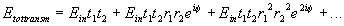
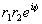
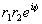
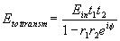
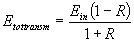

Om vi låter den första ytan ha amplitudreflektans r1, och amplitudtransmittans t 1 och likadant för yta 2
(där r2+t2=R+T=1) och låter fasskillnaden vara f (mellan konsekutiva bidrag) så får vi för den stråle som går igenom oändligt många bidrag. Det bidrag som går rätt igenom har transmitterats en gång i vardera ytan. det som studsat en gång fram och tillbaka får desutom en reflex mot vardera ytan osv
Vi observerar nu att detta är en geometrisk serie med första tal
 och kvot vilket ger oss summan
och kvot vilket ger oss summan

Vi ser här att om vi väljer specialfallet med lika reflektanser vid bägge ytor fås
Etottransm =1 om fasskillnaden är ett jämnt antal pi och
 vid udda antal
Det mest spektakulära är alltså att vid konstruktiv interferens i transmissionsriktningen kommer 100% att transmitteras, trots att man kanske tycker att de procent man "redan tappat" vid första ytan alltid är förlorade. Så är det emellertid inte (vilket vi just visat) därför dessa redan tappade procent interfererar destruktivt med de som reflekteras i den andra vilket gör att ingenting reflekteras.
Av detta följer att allt måste transmitteras eftersom interferens aldrig kan förstöra ljus utan bara omdirigera.